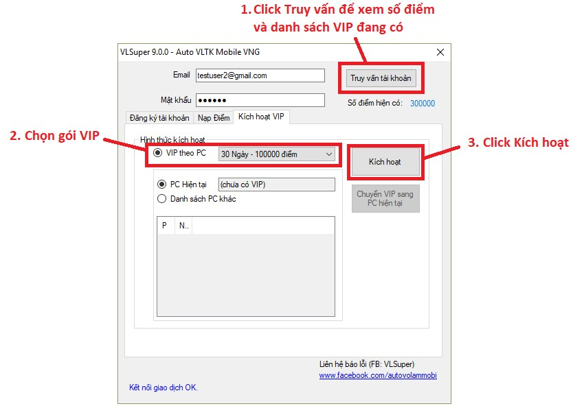

Mã Nạp

Tính Năng
Auto VLSuper với tính năng vượt trội so với tất cả những loại auto khác, Auto VLSuper có thể làm tất cả mọi tính năng, hoạt động trong game một cách tối ưu nhất.Để đăng ký dùng thử vui lòng xem thông tin tại fanpage : https://www.facebook.com/autovolammobi/
Luyện công
- Tự làm nhiệm vụ chính tuyến và phụ tuyến
- Tự luyện công
- Luyện công theo nhiều bãi
- Thiết lập tổ đội luyện công.
- Luyện công tự do, tự tìm tổ đội có lửa.
- Tự cắn Tu Luyện Châu khi có nhiều lửa.
- Tự mua nữ nhi hồng.
- Tự về nơi an toàn khi bị đồ sát.
- Tự Ủy Thác
- Ủy thác kết hợp tổ đội (khi tổ đội có lửa sẽ dừng ủy thác, chạy ra bãi luyện).
Lời Mời | Sư Đồ
- Lời Mời:
- Tự nhận lời mời vào động thần bí (cực nhanh).
- Tự nhận lời mời truyện công, xin truyền công.
- Thiết lập danh sách muốn truyền công.
- Sư Đồ:
- Tự giao nhiệm vụ sư đồ.
- Tự báo cáo nhiệm vụ khi hoàn thành.
Bang hội
- Đổi rương bang hội.
- Góp bang hội.
- Mua vật phẩm bang hội.
- Giúp vật phẩm thương hội.
- Lửa trại bang hội.
- Auto Dã Ngoại (Đánh theo bang hôi và tìm tất cả các Boss).
- Auto Danh Tướng (Đánh theo bang hôi và tìm tất cả các Boss).
- Auto Bạch Hổ Đường.
- Tự Truyền Công
Hoạt Động Ngày
- Auto Phó Bản.
- Đi phó bản tự do.
- Đi phó bản theo tổ đội.
- Auto Trừng Ác.
- Auto Minh chủ.
- Auto Tống Kim.
- Auto Tâm Ma Ảo Cảnh.
- Auto Nhiệm vụ Thương Hội.
- Auto Võ Thần Điện.
- Auto Khiêu Chiến Anh Hùng.
- Auto Tần Lăng.
- Auto Trận Pháp, Môn Khách.
Hoạt Động Tuần
- Auto Thi Đấu Môn Phái.
- Auto Hoa Sơn Luận Kiếm.
- Auto Vận Tiêu.
- Auto Thí Luyện Bang Hội.
- Auto Thông Thiên Tháp.
- Auto Công Thành Chiến.
- Auto Tần Thủy Hoàng, Nữ Đế.
- Auto Quần Anh Hội.
- Auto Bí Cảnh Bang Hội.
- Auto Di Tích Tầm Bảo.
Phụ trợ
- Auto nhận lại phần thưởng
- Auto Tìm kho báu.
- Auto Báo thù (cướp bạc).
- Auto Tặng quà (Cỏ may mắn / Hoa hồng).
- Auto Cường hóa trang bị.
- Auto Gia viên.
- Auto tịnh tâm.
- Auto trồng cây, tưới cây.
- Auto thu hoạch.
- Giúp bạn bè nuôi dưỡng.
- Auto Chiêu mộ, sa thải đồng hành.
- Auto Mở hộp quà, mở thư.
Mua Bán
- Auto mua vật phẩm trên bày bán.
- Auto đấu giá vật phẩm.
Cài đặt Nox Player và game :
1. Auto chỉ hoạt động trên Windows 64 bit
2. Tải và cài đặt trình giả lập Nox trên Windows: https://www.bignox.com/
3. Sau khi cài đặt Nox, chạy Nox lên, vào playstore để tải game Võ Lâm Truyền Kỳ Mobile – VNG. Nếu tìm không thấy, các bạn có thể dùng trình duyệt trong Nox rồi vào link sau : https://play.google.com/store/apps/details?id=com.vng.vltkm&hl=vi
4. Sau khi cài game, các bạn mở game để được cập nhật đầy đủ và vào thử game xem đã được hay chưa.
** Cách thức sử dụng Nox cũng như sử dụng 1 chiếc điện thoại Android.
Những bạn chưa biết cài Nox và cài Game vào Nox vui lòng xem tại đây: Clip hướng dẫn cài giả lập Nox và game
** Cách thức sử dụng Nox cũng như sử dụng 1 chiếc điện thoại Android.
Những bạn chưa biết cài Nox và cài Game vào Nox vui lòng xem tại đây: Clip hướng dẫn cài giả lập Nox và game
Cài đặt và Đăng Ký Auto :
1. Đảm bảo máy đã cài sẵn .NET Framework 4.5.1. (Nếu Win 10 thì đã có sẵn). Với các bản Window thấp hơn Win 10 thì tải và cài đặt ở đây: https://www.microsoft.com/en-au/download/details.aspx?id=40779
2. Nếu khi cài nhận được thông báo đã có rồi hoặc có phiên bản .NET Framework cao hơn thì không cần cài nữa.
3. Hướng dẫn tải và đăng ký tài khoản auto:
https://youtu.be/c9dFuYRXLLg(Các bước hướng dẫn 4 --> 9 đã gộp vào clip hướng dẫn tải và đăng ký)
10. Để có điểm vào tài khoản, các bạn cần thanh toán qua Zalopay. Xem hướng dẫn tại đây: https://goo.gl/xD9mWd
11. Hoặc gửi chat vào page VLSuper để được hỗ trợ thông tin nạp qua Paypal.
12. Sau khi hoàn thành giao dịch, nếu ghi chú chính xác email tài khoản vào giao dịch thì sau 5 phút sẽ có điểm trong tài khoản.
13. Chọn Truy Vấn để kiểm tra số điểm và tiến hành kích hoạt VIP:

14. Sau khi Kích hoạt thành công thì đóng cửa sổ Đăng Ký. Tiến Hành Đăng nhập:
15. Bạn sẽ thấy giao diện như sau:
16. Sau đó bạn chạy giả lập Nox lên.
17. Nếu Nox của bạn chưa cấu hình Root thì chỉnh lại cấu hình thành Root rồi khởi động lại Nox, cách cấu hình Root như sau:
18. Lưu ý cấu hình cho Nox, chọn 1 CPU và 1536 MB RAM (ram tối thiểu cho bản mới vì game nặng hơn), không set 2 CPU (dễ bị treo) và nhớ dùng độ phân giải của tablet để Auto có thể nhận diện được cửa sổ:
19. Lưu ý không thay đổi các lựa chọn mặc định sau để chức năng Tự Đăng Nhập có thể hoạt động được:
20. Sau khi khởi động lại Nox, kiểm tra xem Auto đã tìm thấy cửa sổ của thiết bị Nox hay chưa:
21. Nếu không dùng tính năng Tự Đăng Nhập thì bạn cần login bằng tay vào dừng ở màn hình chọn Nhân Vật, sau đó mới bấm [Start Auto].
22. Nếu dùng tính năng tự Đăng Nhập thì bạn cần vào game ít nhất 1 lần trước đó, chọn xong máy chủ và Nhân Vật. Sau đó mới tắt game đi và nhấn Start Auto. Auto sẽ tự đăng nhập và vào game, tự chạy ngay sau đó luôn.
23. Nếu chưa kích hoạt VIP, các bạn có thể chỉ chạy TEST auto được ở 1 số máy chủ.
24. Nếu đã kích hoạt VIP, các bạn có thể dùng mọi tính năng có trên giao diện, ở mọi máy chủ, nhưng cần lưu ý tinh chỉnh lại cấu hình trước khi Start Auto.
25. Đầu tiên là chỉnh lại giờ Bạch Hổ Đường cho phù hợp với giờ đi của Bang Hội:
26. Sau đó kiểm tra lại danh sách vật phẩm không muốn mua từ Bang Hội, nếu không thêm vật phẩm vào danh sách này thì vật phẩm nào auto cũng sẽ mua:
27. Sau đó có thể nhấn nút [Start Auto] ở phía trên giao diện:
28. Chờ đến khi auto nạp hoàn thành:
29. Để tạm dừng Auto và bạn muốn làm thao tác tay nào khác, click vào biểu tượng của nhân vật trong Game:
30. Để chạy lại Auto sau khi tạm dừng, click vào nút [VLSuper] ở trên lần nữa.
31. Khi muốn Cấu hình lại các chức năng, các bạn chọn đúng cửa sổ Nox muốn cấu hình trên giao diện Auto, cấu hình lại chức năng và click [Lưu]:
32. Khi game chưa nạp Auto thành công, nhấn [Lưu] cấu hình sẽ chỉ lưu mới chứ không nạp lại vào game.
33. Tới đây, đã hoàn thành hướng dẫn cơ bản để các bạn dùng Auto rồi đấy.
34. Để tìm hiểu cách sử dụng từng chức năng, bạn có thể mở hướng dẫn sử dụng chi tiết hơn bằng cách chọn như hình:
Chúc các bạn chơi game vui vẻ !!!
Cập nhật các phiên bản
Phiên bản 29.5.0 (24/10/2022):
- Tương thích với phiên bản game mới Diệp Mộng Giang Hồ
- Cập nhật bản đồ train PK mới, bản đồ trừng ác mới
- Cập nhật danh sách vật phẩm mới trong Mua bán, Đấu giá
Phiên bản 29.0.0 (22/06/2022):
- Tương thích phiên bản game Thương Kiếm Như Mộng
Phiên bản 28.0.0 (25/03/2022):
- Thích ứng phiên bản game mới Ngọa Hổ Tàng Long
- Thêm lựa chọn dọn Tuyệt học(chưa giám định) và Bùa Tẩy Luyện
- Thêm lựa chọn không mở vật phẩm đồng hành SS trở lên, để có thể tích lũy Thức tỉnh Skill 2 đồng hành
Phiên bản 27.5.0 (08/01/2022):
- Thêm lựa chọn ẩn Npc/ Người chơi để giảm lag hình ảnh
- Bật lại tính năng cho phép tắt icon hiệu ứng Skill để giảm lag hình ảnh
- Cải tiến cho phép tự động đăng nhập ít bị lỗi hơn
Phiên bản 27.3.0 (14/12/2021):
- Thử nghiệm tính năng Thủ Lĩnh Trục Lộc
- Thử nghiệm tính năng Trục Lộc Chiến
- Thử nghiệm nhiệm vụ Chiến Long